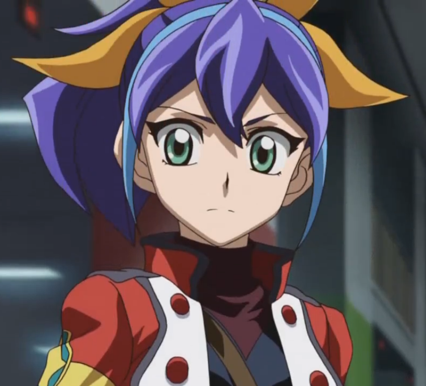
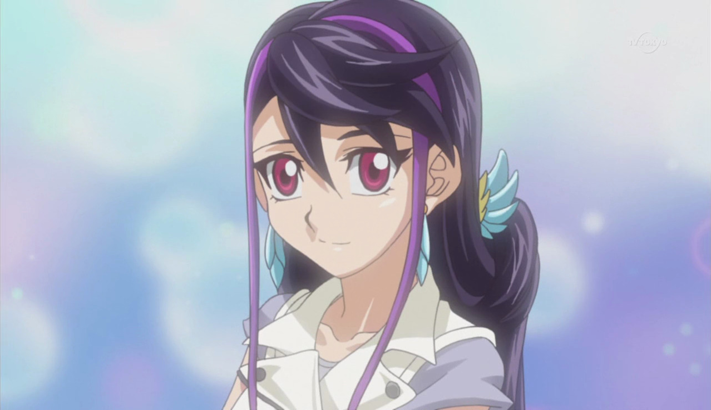
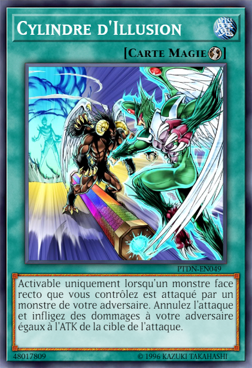
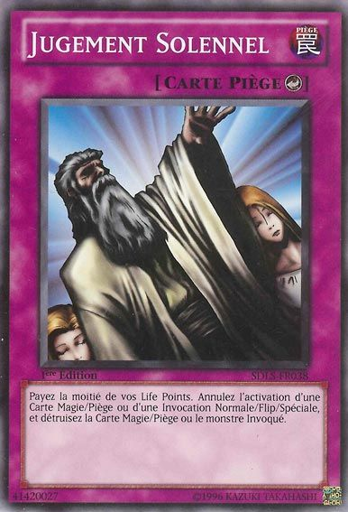

!
!Judai répondit. L'instructeur grimaça.
Instructeur: Hé ! Réveille-toi espèce de fainéant ! Je suis en train de te parler là !
Toute la classe a été surprise par le ton colérique de leur instructeur. Ils ont compris pourquoi. L'un des élèves, un jeune garçon portant une veste rouge, a été retrouvé la tête basse entre ses bras. Il semblait faire la sieste en classe, ce que le professeur n'approuvait certainement pas. Quand il a crié, le garçon s'est mis au garde-à-vous. Il avait l'air effrayé.
???: Hein !? Euh... quelle heure est-il ?
Demanda le garçon en se frottant les yeux.
Instructeur: Le cours a commencé il y a dix minutes de ça, et tu as décidé de roupiller pendant mon introduction ! Quel manque de respect ! Ici, à Academia, nous ne tolérons pas les fainéants qui pensent avoir une bonne opportunité ici !
???: Ouais, comme si venir dans cette décharge était une bonne opportunité pour tout le monde...
Ce mumura t-il à lui-même.
Instructeur: Qu'est-ce que tu viens de dire
L'instructeur a demandé, toujours sur un ton colérique. Le garçon a alors pris un air un peu paniqué.
???: Euh, j'ai dit que j'espérais ne pas me faire larguer par cette jolie fille qui me faisait de l'œil ces derniers temps !
Il le disait avec un petit rire nerveux. Le professeur le regarde fixement.
Instructeur: Comment tu t'appelles, mon garçon ?
Ce dernier se gratta l'arrière de la tête et sourit à pleine dent.
Judai: C'est Judai m'sieur !
Yuki Judai !
Judai répondit. L'instructeur grimaça.
Instructeur: Eh bien, Yuki Judai, tu ferais bien de faire ce que tes professeurs te disent. Sinon, tu finiras par devenir un fainéant pour le restant de ta vie.
Il le dit froidement. Judai a juste gloussé.
Judai: Je comprends, m'sieur.
Instructeur: Et arrête de m'appeler comme ça ! Maintenant, si je vous surprends à faire la sieste à nouveau, vous le paierez au centuple ! Vous avez compris, M. Yuki ?
Il a hurlé en frappant de ses mains le bureau de Judai. Judai s'est redressé, les yeux écarquillés.
Judai: Ouep, je comprends très bien !
Répondit Judai, semblant un peu trop insouciant au goût du professeur. Tout en continuant à le regarder fixement, le professeur a repris son cours. Judai, de son côté, se fichait éperdument de ce que ce stupide instructeur pensait.
Il détestait tout dans cette école. Elle n'avait rien à voir avec celle où il était allé il y a des années. Là-bas, tout le monde était heureux et trouvait du plaisir dans tous leurs duels. Plusieurs de ses anciens amis y ont vécu les meilleurs moments de leur vie. Ici, par contre, c'était plus une école militaire qu'une école pour apprendre aux enfants à devenir des Duellistes professionnels.
Une fois le cours terminé, Judai se dirigea vers l'extérieur pour la seule partie d'Académia qui n'était pas si mauvaise : le déjeuner. Si leurs méthodes d'enseignement et leurs idéaux le dégoûtaient, la nourriture, elle, ne le dégoûtait pas. Il a trouvé un endroit tranquille et isolé dans la cour pour profiter du soleil. Personne d'autre ne semblait être dans les parages... du moins, c'est ce qu'il semblait.
Pendant que Judai avalait son repas, il était observé par quelqu'un juste derrière les portes du couloir principal. En fait, c'était la personne que Judai était venu chercher en premier lieu. Alors qu'elle l'étudiait, Serena s'est demandée quel était le problème avec lui.
Il y a deux jours, Serena a regardé les étudiants de première année arriver à Academia pour commencer leur formation. Tout le monde semblait excité de venir ici. Cependant, elle a tout de suite remarqué que l'un des nouveaux venu n'avait pas le même air. En fait, le garçon avait l'air de ne pas vouloir venir du tout, qu'il se sentait forcé de le faire. Ce garçon était celui qui l'intéressait et qu'elle observait maintenant.
Juste après la cérémonie de présentation, les élèves ont eu droit à une visite du bâtiment. Judai ne semblait pas apprécier l'incroyable spectacle qu'était ce bâtiment. Alors que Serena continuait à l'observer.
Serena: Qu'est-ce qui se passe avec toi ?
Serena a demandé sans détour ce premier jour, après que la visite se soit terminée et que les nouveaux étudiants aient été envoyés dans leurs dortoirs. Judai se dirigeait vers sa chambre lorsque Serena a surgi de nulle part, semblant le surprendre.
Judai: Avec moi ? Je ne vois pas de quoi tu parles.
Judai répondit innocemment. Serena n'avait pas l'air de le croire.
Serena: Ne joue pas les idiots avec moi. Je peux dire que tu n'es pas ravi d'être ici comme le reste des étudiants de première année. Ne voulais-tu pas venir ici et
devenir ce que l'on attend de toi ?
Demanda Serena. Judai a haussé les épaules.
Judai: Tu vois, il y a quelque chose que tu dois savoir sur moi : Je ne fais jamais ce que les autres attendent. Exemple, tout le monde ici s'attend à ce que je
sois une sorte de robot obéissant, sans aucun signe d'insubordination. Et bien, il se trouve que je suis un rebelle dans l'âme !
Disait Judai avec un grand sourire. Serena a levé un sourcil.
Serena: Si tu continues à avoir cette attitude, tu vas te retrouver nez à nez avec le Professeur lui-même.
Serena le disait avec force.
Judai: Oh, le chauve méchant et coincé avec une espèce de toque bizarre sur la tête ? Je n'ai pas peur de lui !
Judai le disait nonchalamment. Cela a rendu la fille furieuse.
Serena: N'insulte pas le professeur ! Tu pourrais sérieusement être jeté dans une cellule de détention pour ça ! Tu veux avoir ça sur ton dossier pour le restant de ta vie !?
Serena a dit fort. Elle n'arrivait pas à croire qu'un nouvel élève insultait le Professeur de cette façon. Judai n'a pas semblé être déconcerté par son emportement.
Judai: Est ce que quelqu'un t'as déjà dis que tu t'emportais assez facilement ? Tu devrais peut-être essayer de maîtriser ta colère.
A suggéré Judai. Serena a gémi en commençant à s'éloigner de lui.
Judai: Oh...allez ! Pourquoi es-tu en colère contre moi, Serena ? C'est lui qui te garde ici. Comme une princesse enfermée dans une tour, gardée par un immense dragon.
Cette déclaration arrêta Serena et la fit se retourner pour lui faire face, encore plus surprise.
Serena: Comment sais-tu cela ? Et mon nom aussi ?
Elle a demandé.
Serena: Tu ne me connais même pas.
Judai a de nouveau haussé les épaules.
Judai: J'ai juste entendu d'autres élèves mentionner le fait que
Akaba Leo est un peu trop possessif quand il s'agit de toi.
est un peu trop possessif quand il s'agit de toi.
Judai a dit, en essayant de paraître sincère. Serena l'a regardé avec suspicion.
Serena: Comment as-tu dit que tu t'appelais ?
Elle a demandé.
Judai: Je ne me suis pas encore présenté. C'est Yuki Judai.
Il a dit, en offrant sa main. Serena a regardé la main de Judai, pour ensuite regarder à son visage. Elle choisit de ne pas lui serrer la main.
Serena: Ecoute moi, Yuki Judai. Comme tu es nouveau ici, je vais te laisser partir avec un avertissement. Ne fait rien qui puisse attirer l'attention du professeur
de façon négative. Si tu le fais, tu vivras uniquement pour le regretter toute ta vie.
Serena l'a prévenu avant de s'en aller. Après qu'elle l'aie fait, Judai souria.
Judai: C'est tout un travail à faire de s'occuper d'elle. Mais si je joue bien mes cartes au bon moment, nous serons tous les deux sortis d'ici peu.
Il s'est dit à lui-même alors qu'il entrait dans son nouveau dortoir.
Depuis le jour de cette rencontre, Serena faisait un travail personnel en gardant un oeil sur Judai Yuki. Quelque chose en lui semblait bizarre. Comparé aux autres nouveaux étudiants (ou à n'importe quel autre étudiant d'Academia), il était considéré comme un étranger, du moins pour elle. Il était le seul de sa classe à ne pas prendre le travail scolaire au sérieux. De plus, lorsque tous les autres prenaient leur repas ensemble, Judai se trouvait un endroit privé avant de manger.
En plus de tout cela, quand il mangeait seul, Serena voyait qu'il avait toujours l'air de se parler à lui-même. Elle n'était pas assez proche pour entendre ce qu'il disait, et il ne parlait jamais très fort. Chaque fois qu'il faisait cela, il semblait être joyeux. En fait, ce n'était que pendant ces heures de repas isolées que Judai semblait vraiment heureux. Le déjeuner d'aujourd'hui n'était pas différent.
Serena: Depuis deux jours qu'il est ici, et il a déjà la réputation d'être le pire étudiant de première année d'Academia. Même ses compétences en duel sont négligés. Il ne tiendra pas longtemps ici s'il ne se reprend pas en main.
Serena pensait en le regardant. Elle a pensé que ce ne serait qu'une question de temps avant que le Professeur ne remarque le mauvais comportement de Judai en tant qu'étudiant. Et ce n'est que plus tard dans la journée que Judai a fait un coup que personne dans Académia n'oserait faire, ou oublier.
Après le déjeuner, les étudiants se sont réunis pour leurs leçons pratiques. Cela se passait dans un grand colisée. En d'autres termes, ils faisaient des duels. Quand Serena a mentionné que les compétences de Judai étaient médiocres, elle ne plaisantait pas. Son Deck entier était un désordre, rempli de cartes qui ne fonctionnaient pas du tout ensemble. Chaque fois qu'il a fait un duel, il a toujours atterri sur son derrière en perdant. Il n'a jamais pu attaquer un seul de ses adversaires.
A leur grande surprise, Judai riait toujours en se relevant. Ses défaites constantes ne semblaient pas le déranger.
Judai: Oh bien, c'est une autre défaite pour moi ! Peut-être que je ferai mieux la prochaine fois !
Il a dit sans se soucier du monde. Serena était perplexe. Elle n'arrivait pas à le comprendre. Puis quelque chose d'autre a attiré l'attention de toutes les personnes ici présentes.
Jeune étudiant: Non ! S'il vous plaît ! Laissez-moi partir ! Je vous promets que je vais faire mieux ! S'il vous plaît, laissez-moi partir ! Je ne veux pas être enfermé !
Un autre étudiant de première année en veste rouge, qui avait des cheveux blonds courts et ondulés, a crié alors qu'il était traîné avec force par deux étudiants plus âgés, portant des uniformes scolaires bleus. Le jeune garçon avait l'air effrayé et voulait s'enfuir, mais n'y arrivait pas.
???: Inacceptable ! Tu devrais savoir que tu dois être impitoyable en duel avec tes adversaires et les détruire, pas jouer gentiment avec eux ! Academia ne tolérera pas
une telle faiblesse dans leurs rangs !
Hurla un homme musclé plus âgé, avec une épaisse moustache grise et des cheveux gris. Il brandissait également un fouet, qu'il utilisa pour frapper l'étudiant en pleurs.
Judai serra les dents en voyant ce mauvais traitement.
Jeune étudiant:
Instructeur Sanders , pitié !
, pitié !
L'élève supplia, mais Sanders n'a pas voulu écouter ses supplications.
Sanders: La mendicité est pour les faibles et les impuissants, ce qui convient parfaitement à un raté comme toi ! Maintenant, enfermez-le !
Ordonna Sanders aux élèves plus âgés.
Judai: Laissez-le tranquille !
Cria Judai en courant vers le groupe. Quand il l'a fait, il a frappé les deux étudiants plus âgés au visages, ceux qui les as choqués momentanémment et les a forcés à
s'éloigner du plus jeune.
Judai: Cours Alex ! Va-t-en !
Ordonna Judai. Alex, l'étudiant de première année terrifié, a couru comme il ne l'avait jamais fait auparavant.
Sanders: Poursuivez-le ! Maintenant !
Sanders a ordonné à ses subordonnés. Alors que les deux élèves plus âgés se remettaient sur pied, ils se sont immédiatement lancés à la poursuite d'Alex. Une fois que ces trois étaient hors de vue, Sanders a porté son attention sur le gamin qui s'est interposé. Les autres étudiants dans le colisée, y compris Serena, ont regardé Judai en choc. Ils savaient qu'il allait vraiment avoir des problèmes, là maintenant.
Sanders: Toi ! Comment oses-tu intervenir ? Tu seras puni très chèrement pour avoir interferer avec moi !
Cria Sanders. Judai grogna contre l'instructeur sévère.
Judai: La seule personne ici qui devrait être punie... c'est vous !
Disait Judai en frappant Sanders dans l'aine. Sanders cria d'une douleur intense en se tenant les parties intimes et tomba à genoux. Il avait tellement mal qu'il ne pouvait pas parler. Tout le monde a été choqué par les actions de Judai.
Judai: La façon dont vous dirigez cette école, en traitant des élèves comme Alex avec une telle cruauté, ça me rend malade ! C'est vous qui devriez être enfermé,
comme la bête sans coeur que vous êtes !
Judai cria avec mépris.
Judai: Et votre boss,
Akaba Leo
, mérite aussi d'être dans une cellule, juste à côté de la tienne pour toutes les choses horribles qu'il a faites !
Akaba Leo: C'est vraiment ce que tu penses ?
Judai et tous les autres ont vu le Professeur lui-même, Akaba Leo, entrer maintenant dans la zone de duel. Il se dirigea calmement vers Judai, l'air très mécontent de la conduite du garçon. Serena a regardé Judai avec colère et déception.
Serena: Bon sang ! Judai. Je t'avais dit de ne pas faire une chose pareille !
Elle a murmuré doucement. Tous les autres attendaient que la sentence ne tombe, alors qu'une tension lourde remplissait l'air. Judai n'a montré aucune crainte, Leo, quand à lui, l'a regardé de haut.
Leo: Yuki Judai, j'ai entendu parler de ta conduite paresseuse pendant tes cours et de ta médiocrité dans tes duels. Je venais moi-même te sermonner quand je t'ai
vu défier et agresser l'instructeur Sanders. Il est clair que tu n'es pas seulement paresseux et faible, mais aussi extrèmement provocateur. Et maintenant
je t'entends dire à tout le monde que je devrais être dans une cage aux côtés de Sanders. As-tu quelque chose à dire pour ta défense ?
Demanda Leo d'un ton sévère. Judai l'a certainement fait.
Judai: Tu parles que je vais le faire, oui.
Il s'est ensuite tourné vers les autres élèves, car il voulait qu'ils entendent ce qu'il avait à dire... surtout Serena.
Judai: Ces enfants qui viennent ici devraient apprendre à aimer et à apprécier les duels et devenir des Pros pour montrer la joie aux autres ! Mais au lieu de cela,
ils sont traités comme s'ils devaient se battre dans une guerre ! Votre invasion de la Dimension Xyz est bien la preuve que cet endroit est mauvais ! Vous y envoyez
des enfants pour transformer tout le monde, duellistes et civils, en cartes ! En même temps, ils détruisent leurs maisons et ne laissent que douleur et souffrance à
ceux qui ont réussi à survivre ! Vous leurs avez lavé le cerveau à ces étudiants pour qu'ils considèrent cela comme un jeu de chasse, où toutes les bonnes personnes
innocentes sont considérées comme des proies à traquer et à capturer ! Vous leur avez tellement embrouillé la tête qu'ils ne peuvent pas dire que les gens qu'ils
ont attaqués souffrent ! Et tout ce blâme pour ce qu'ils sont devenus... c'est à cause de toi !
Judai finissa son histoire, avant de cracher sur le visage de Leo.
Serena, comme tout le monde, était tellement choquée par les mots et les actions de Judai qu'elle était complètement sans voix. Aucune personne saine d'esprit n'oserait parler au Professeur de cette façon, et pire encore, il a eu l'audace de cracher sur le visage de cet homme redoutable ! Serena n'aurait jamais imaginé que quelqu'un puisse être aussi stupide pour faire de telles choses. Ce type, Judai Yuki, était différent de toutes les personnes qu'elle avait rencontrées. Comment un étudiant de première année pouvait-il traiter l'homme en charge d'Academia de cette manière ? Cependant, ce n'était pas seulement les actions de Judai contre le Professeur qui la dérangeaient...
Leo: Il est clair pour moi que tu n'est qu'un fauteur de troubles. Pour ton insubordination, tu seras enfermé et ceux jusqu'à nouvel ordre ! Et, juste pour ta "dernière" petite action que tu iens de faire,
je t'escorterai moi-même jusqu'à ta nouvelle cellule !
Déclara Léo en attrapant Judai par le poignet et en l'obligeant à le suivre hors de la zone. Étrangement, le jeune garçon ne s'est pas débattu
Leo: Sanders, quand tu auras récupéré, remets moi tout ça en place, comme prévu.
Léo a donné des instructions avant que Judai et lui ne soient hors de vue.
Sanders: O-Oui, Professeur !
Sanders disait faiblement, se sentant enfin mieux après le coup de pied de Judai
Sanders: Vous autres, retournez à vos duels ! C'est un ordre !
Par peur d'être le prochain dans le collimateur de Sanders, tous les élèves reprirent leurs exercices de duel.
Serena, alors qu'elle choisissait son prochain adversaire, était toujours furieuse que Judai ait ignoré ses avertissements sur le fait de s'être attirer les foudres du Professeur. Maintenant il va être emprisonné pour qui sait combien de temps. Elle devrait le détester pour son indiscipline. Cependant, elle se sentait aussi mal pour Judai. Elle avait voulu essayer de le protéger. Elle était quelque peu attristée qu'un étudiant de première année soit traité de la sorte si tôt dans sa première année.
Cependant, quelque chose d'autre la tracassait aussi. Judai avait dit qu'il y avait des gens dans la Dimension Xyz qui n'étaient pas duellistes, qu'il y avait des gens qui ne pouvaient pas se défendre. Il avait également souligné que les étudiants qui avaient envahi la dimension ne se souciaient pas de ces personnes, qu'ils les considéraient comme des animaux à piéger et qu'ils avaient causé une destruction massive. Ce n'était pas comme ça que le projet Projet Arc Area devait fonctionner, ou plutôt comme il était censé fonctionner. Puis Serena venait de réaliser quelque chose d'étrange.
Serena: Comment Judai pouvait-il savoir comment ça s'est passé ? Il n'était pas là lors de la première invasion. De plus, je n'ai jamais entendu parler de
civils chassés et scellés dans des cartes sans se battre. Comment pourrait-il le savoir alors qu'il n'est là que depuis deux jours ? A-t-il entendu quelque chose de
la part des étudiants qui sont revenus de la Dimension Xyz ? Il a aussi mentionné qu'il avait entendu d'autres personnes dire que le Professeur me gardait ici.
Serena pensait que cela semblait peu probable.
Tout chez Judai Yuki lui semblait inhabituel. D'abord son attitude de fainéant, et maintenant cet accès de colère inattendu envers Sanders et le Professeur lui-même. Et puis elle a aperçu le visage de Judai alors qu'on l'emmenait. Serena a cru voir un petit sourire avant qu'il ne soit hors de vue. Pourquoi diable souriait-il alors qu'il allait être emprisonné pour ses actions ?
Serena: Il se passe vraiment quelque chose avec lui. Il sait quelque chose... et je vais découvrir ce que c'est !
Se disait Serena, déterminée, alors qu'elle affrontait son adversaire en duel, qui a finalement perdu en raison des compétences supérieures de Serena en duel.

Leo: Cet endroit va être ton nouveau foyer à partir de maintenant.
Leo a dit froidement en jetant Judai dans sa cellule. Alors qu'il se relevait aussitôt, Loo avait déjà claqué la porte et l'avait verrouillée. Après avoir glissé la clé dans sa poche, il est parti sans un mot ni un regard pour le garçon.
Maintenant seul dans sa cellule, Judai étudie son nouvel environnement. Malgré le fait d'être un prisonnier, il se sentait optimiste. Il espérait sincèrement qu'Alex s'était échappé. Il a alors décidé de vérifier les autres cellules voisines.
Judai: Yo ! Il y a quelqu'un d'autre ici ?
Judai a appelé depuis la porte de sa cellule.
Etudiante: Pas beaucoup. Je pense que nous sommes environ une demi-douzaine ici.
Appela une jeune fille aux cheveux rouges que Judai pouvait voir à environ deux cellules à sa droite. Elle avait l'air vraiment déprimée.
Etudiant (1): On a tous eu de gros problèmes. Mais mec, tu dois avoir fait quelque chose de vraiment mauvais si le Professeur lui-même t'a amené ici.
Dit un garçon plus âgé aux cheveux verts hérissés, juste en face de la fille.
Judai: Oh, rien de grave. Tout ce que j'ai fait, c'est donner un coup de pied dans les noix d'un certain Sanders, puis insulter en plein visage de Akaba Leo.
Etudiant (2): Bordel de... ! Tu devais avoir une sérieuse envie de mourir !
Dit un autre garçon que Judai ne pouvait pas voir.
Etudiante: Mais à quoi tu pensais !?
Demanda la fille aux cheveux rouges, incrédule.
Judai: Quelqu'un se devait de leur tenir tête. Je n'ai jamais été un fan de la façon dont cette école fonctionne, ou des gens qui la dirigent. De plus, ce n'est pas comme si j'allais rester ici longtemps. Bientôt, je quitterai cet endroit... et vous pouvez aussi m'accompagner durant ce voyage.
Judai a dit d'un ton joyeux, comme s'il savait que tout allait bien se passer. Les autres élèves pensaient qu'il avait déjà perdu la tête.
Etudiante: Es-tu idiot ou quoi ? Aucun de nous ne sortira d'ici ! Le Professeur possèdent toutes les clés des cellules ! On n'a nul part ou aller !
La fille aux cheveux rouge hurle de colère. Judai se contenta de sourire en s'allongeant sur le sol de sa cellule. On aurait dit qu'il était sur le point de faire une sieste.
Judai: Faites-moi confiance. Tout ce qu'on a à faire... c'est de s'asseoir ici et de se détendre.
Disait Judai en fermant les yeux. Les autres ont soupiré et se sont plaints de ses illusions d'évasion et de ses faux espoirs. À ce moment-là,
Yubel est sorti pour parler.
est sorti pour parler.
Yubel: Judai, es-tu certain qu'il va venir ?
A demandé l'esprit de duel. Judai n'a pas ouvert les yeux, mais a continué à sourire.
Judai: Je sais qu'il viendra.
Judai a répondu doucement. Sur ce, il a commencé à faire la sieste. Yubel, elle sourait en disparaissant.

Plus tard, alors que le soleil commençait à se coucher, tout était calme et silencieux à Academia. Rien ne bougeait, ni ne faisait de bruit. À l'exception, bien sûr, de la silhouette solitaire qui se déplaçait rapidement du couloir principal vers la cour. En se déplaçant, la silhouette regardait constamment pour voir si elle n'était pas suivie. Il n'a vu personne pendant qu'il traversait. Il espérait également que la cape qu'il portait cacherait suffisamment son visage au cas où quelqu'un l'aurait aperçu.
Cependant, alors qu'il commençait à descendre le long des escaliers, il n'a pas remarqué que quelqu'un le suivait en effet. Dans l'ombre, Serena est sortie pour regarder la silhouette descendre les escaliers.
Serena: Pourquoi descend-il là ?
Elle s'est demandé en courant après lui.
De retour dans sa cellule, Judai a ouvert les yeux en entendant des pas de course venant dans sa direction. Il se met sur ses pieds, alors qu'une silhouette s'arrêta devant lui.
???: Judai, tu vas bien là-dedans ?
Demanda une voix inquiète. Judai a souri en s'approchant de la porte de la cellule.
Judai: Je vais bien. Content que tu aies pu venir, Alex.
Alors qu'il retirait la cape, le garçon blond que Judai a sauvé plus tôt lui a souri.
Alex: Ce n'était pas facile, de courir et de se cacher de ces étudiants qui me poursuivaient. Une fois que je les ai semés, j'ai entendu dire que tu avais été emmené dans une cellule de détention avec les autres.
Judai: Tu as apporté ce que je t'ai laissé ?
Alex: C'est juste là. Je l'ai gardé en sécurité, comme tu l'as demandé. Je l'ai apporté quand j'ai appris ce qui s'était passé.
Alex a alors donné à Judai un paquet emballé à travers les barreaux de la cellule. Judai a ouvert le paquet pour révéler un
Duel Disk avec une doublure rouge. Il a fait
un grand sourire.
avec une doublure rouge. Il a fait
un grand sourire.
Judai: Super ! Merci mon pote ! Je te dois vraiment beaucoup !
Alex a alors secoué la tête.
Alex: Non, tu m'as aidé tout à l'heure, et maintenant, c'était à mon tour de t'aider. Nous sommes quittes maintenant.
Judai acquiesca en enfilant son Duel Disk. Il était heureux que cette partie du plan ait fonctionné...
Début du Flashback
Pendant le voyage du yacht vers Academia, Judai avait observé tous les nouveaux élèves impatients d'intégrer l'école de duel. Un jeune garçon, aux cheveux blond ondulé, a attiré son attention, près de l'arrière du navire. Il semblait solitaire. Judai a décidé d'aller lui parler.
Judai: Hey ! Quoi de neuf ?
Demanda Judai, faisant légèrement sursauter le garçon.
Alex: Oh ! Euh, désolé. Je suis juste... nerveux.
Il dit timidement. Judai a gloussé.
Judai: Pas de problème. Tout le monde est nerveux dès le premier jour dans une nouvelle école. Je suis sûr que tu t'en sortiras bien.
Bien sûr, Judai avait de la peine pour le nouveau venu. Il n'avait aucune idée du genre d'entraînement qu'il allait subir sur cette île...
Alex: Je l'espère. Au fait, je m'appelle Alex. Alex Parker. Comment tu t'appelles ?
Judai: Judai. Yuki Judai. Ravi de te rencontrer Alex.
Judai a dit en serrant la main du garçon. Les deux jeunes hommes ont ensuite parlé de duels et du fait qu'ils aiment tous les deux ce jeu. Judai et Alex semblaient bien s'entendre. Au bout d'un long moment, l'île est apparue. Judai a alors décidé de commencer à préparer le plan pour sortir Serena de là.
Judai: Dis-moi Alex, peux-tu faire quelque chose pour moi ?
Judai a demandé à son nouvel ami.
Alex: Bien sûr. Qu'est-ce que c'est ?
Alex a demandé, curieux de savoir ce que l'autre nouveau venu avait en tête. Après s'être assuré que personne ne regardait, Judai a sorti quelque chose du sac à dos qu'il portait depuis qu'il avait embarqué sur le yacht. C'était un paquet emballé, de la même taille qu'une grande boîte à chaussures.
Judai: J'ai besoin que tu gardes ça pour moi. C'est quelque chose de très important. Ne laisse personne savoir que tu l'as, et ne regarde pas dedans toi-même.
Moins tu en sauras, mieux cela sera.
Judai a donna ses instructions.
Alex: Mais pourquoi ? Qu'est-ce qu'il y a dedans ?
Alex a demandé, mais Judai a ignoré sa question et a continué.
Judai: Il n'y a rien de dangereux. Il suffit de le garder quelque part, hors de vue où tu pourras le retrouver plus tard. Maintenant, écoute attentivement cette partie Alex, parce que c'est très important. Si quelque chose de mal m'arrive et que j'ai des ennuis, il y a de fortes chances qu'ils me mettent en détention. J'ai besoin que tu me ramènes ce paquet. Ne laisse personne te voir avec, ou on sera tous les deux dans le même bateau. Tu comprends tout ça, Alex ?
Alex était en fait encore plus nerveux, ainsi que curieux.
Alex: Pourquoi me demandes-tu de faire ça ? Est-ce que quelque chose de mal va t'arriver quand on sera là-bas ?
Alex a demandé, effrayé maintenant. Judai lui a alors tapé sur l'épaule en riant.
Judai: Disons simplement que je te fais confiance. Alors, tout est bon pour toi ?
Judai demanda. Alex avait l'air très hésitant, ne sachant pas s'il devait prendre le paquet que Judai lui demandait de garder temporairement. Il a regardé l'objet caché d'un air las. Après un long moment, Alex a décidé d'accepter l'étrange demande de Judai en prenant le mystérieux paquet.
Alex: Je vais le faire.
Le garçon avait l'air un peu déterminé maintenant à tenir sa promesse faite à son nouvel ami. Judai a souria avec satisfaction.
Judai: C'est génial ! Merci Alex
Fin du Flashback
Tout le monde: Un Duel Disk !
Alex et les élèves captifs se sont exclamés.
Alex: Mais, en quoi cela va-t-il vous aider ?
Judai: Tu vas voir. Recule !
Judai l'a prévenu alors qu'Alex s'éloignait de la porte de la cellule. Une fois que son Duel Disk était en marche, il a invoqué un Monstre vert à l'apparence héroïque qui utilisait des plumes pour couper les barreaux comme un couteau sur du beurre chaud.
Judai est ensuite sorti de sa cellule. Tout le monde était stupéfait et Judai s'est tourné vers eux.
Judai: Vous tous, éloignez-vous des portes des cellules !
Après s'être assuré que les enfants emprisonnés étaient hors de danger, Judai a demandé au même monstre de les libérer tous, ce qu'il a fait en tranchant les barreaux, comme il avait fait à ceus de son maître. Les élèves n'arrivaient pas à croire ce qui se passait ! Ils étaient libres !
Etudiant (1): C'était vraiment génial ! Comment as-tu fait ça ?
Demanda le garçon aux cheveux verts, étonné par cette dernière attaque.
Judai: Disons que j'ai deux trois tour dans ma manche ! Maintenant, qui est prêt à quitter cette île avec moi ?
Les autres élèves furent choqués par cette question.
Serena: Alors c'est ça ta véritable intention ? Une évasion massive de l'île ? Honnêtement, je ne l'aurais jamais deviné.
Judai et les autres élèves ont alors vu Serena au pied des escaliers, leur seul moyen d'évasion.
Serena: Je savais qu'il y avait quelque chose de bizarre chez toi Judai, mais cette situation ne m'a définitivement pas traversé l'esprit.
Judai: Hey Serena ! Qu'est-ce qui t'amène ici dans notre petite fête d'évasion ?
Judai a questionné, pas vraiment surpris de la voir là.
Serena: Je venais pour découvrir ce qui se passait avec toi. Puis j'ai vu ce gars, Alex, qui se dirigeait vers les prisons de l'école et je suis arrivée juste au moment où tu étais occupé à libérer les autres de leurs cellules.
Les autres élèves paniquaient maintenant. Ils se demandaient si elle avait déjà alerté quelqu'un sur leur tentative d'évasion.
Judai: Alors, quoi maintenant ? Tu vas nous dénoncer ?
Demanda Judai d'un ton désinvolte. Serena grogna, tout en souriant et en croisant les bras.
Serena: Cela dépend. Est-ce que tu comptes vraiment emmener tous ces étudiants loin d'Academia ?
Judai: Et si c'était le cas ?
Judai a rétorqué avec sa propre question. La réponse de Serena stupéfia les étudiants libérés.
Serena: Dans ce cas... je viens aussi. J'ai encore des questions à te poser, et quelque chose me dit que si je te suis, je pourrais tomber sur de puissants duellistes contre lesquels je pourrais prouver mes compétences.
Serena n'a pas révélé cependant que c'était aussi l'occasion de prouver enfin au Professeur combien elle était forte et de lui donner le respect qu'elle méritait. Elle s'est ensuite approchée de Judai et lui a tendu la main.
Serena: Tu me laisses venir, et je ne vous dénoncerai pas au Professeur. Marché conclu ?
Judai a souri en serrant la main de Serena.
Judai: Marché conclu.
Serena semblait heureuse que Judai accepte ses demandes. Mais ce que Serena ne savait pas, c'est que Judai avait prévu et espéré qu'elle vienne de son plein gré.
Pendant ces repas privés où il semblait se parler à lui-même, Judai conversait en fait avec les esprits de ses Monstres de Duel. Ils l'aidaient à lui remonter le moral lorsqu'il se sentait frustré par la façon dont Academia gérait les choses et, plus important encore, par la façon dont ils " enseignaient " à leurs élèves. C'etait également pendant le déjeuner de ce jour-là qu'un de ses amis esprits lui a annoncé une bonne nouvelle.
Dès qu'il entendit la voix de son monstre, Judai se tournait vers lui et lui raconter les dernières nouvelles pour l'aider dans sa mission.
???: Ecoute ça, Judai. J'ai surveillé Serena comme tu l'as demandé, et elle est définitivement curieuse à ton sujet. Et meilleure nouvelle encore, elle sera à la
séance d'entraînement en duel de cet après-midi dans le colisée, ainsi qu'Alex. Ce sera le meilleur moment pour toi de passer à la partie la plus radicale du plan
en action.
Disait ce qui semblait être un colibri humanoïde rouge. Judai acquiesca la tête en signe d'approbation.
Judai: Génial, merci “Hummingbird ” . De cette façon, Serena entendra à quel point Academia est immorale et commencera à avoir des doutes à son sujet. Et, avec un peu de chance, quand je ferais sortir les autres élèves enfermés, Serena viendra et demandera à s'échapper avec nous pour ses propres raisons. Une fois que nous serons loin d'ici, je lui révèlerai la vraie raison pour laquelle elle a dû partir.
Judai était définitivement satisfait que les choses se passent comme prévu. Serena s'étant échappée avec eux, il ne leur restait plus qu'à quitter l'île... ce qui était en fait la partie la plus difficile. Il s'attendait définitivement à des mesures de sécurité contre toute tentative de fugue.
Serena: Alors, Judai, comment allons-nous sortir d'ici ?
Demanda Serena. Elle, Alex et les autres étudiants attendaient d'entendre le plan d'évasion de Judai. Ce dernier commenca sourire, comme un enfant sur le point de commettre un crime majeur.

Dans sa salle du trône, Akaba Leo frappa du poing sur son accoudoir. Il venait d'apprendre par
Yuri que
Rin
que
Rin lui avait échappé dans la Dimension Synchro. Il a dit qu'il avait cherché partout où il la connaissait, mais n'avait trouvé aucune trace de la fille. Elle avait disparu.
Après que Yuri l'ait quitté, Leo râla sur ce second échec.
lui avait échappé dans la Dimension Synchro. Il a dit qu'il avait cherché partout où il la connaissait, mais n'avait trouvé aucune trace de la fille. Elle avait disparu.
Après que Yuri l'ait quitté, Leo râla sur ce second échec.
Leo: D'abord Ruri a réussi à s'échapper, et maintenant Rin. C'est inconcevable ! Perdre un des fragments de Ray était malchanceux, mais deux en plus ? Et les deux fois, Yuri a été intercepté par quelqu'un qui a aidé les filles à s'enfuir !
Leo pensait avec colère à ces récents échecs. Dans la dimension Xyz, Ruri a été aidée par un garçon nommé
Yuma et tous les deux se sont échappés dans un vaisseau géant d'origine inconnue. Yuri n'avait aucune information sur celui qui l'avait assommé dans la Dimension Synchro,
car il avait été frappé par derrière et n'avait donc jamais vu son
agresseur
et tous les deux se sont échappés dans un vaisseau géant d'origine inconnue. Yuri n'avait aucune information sur celui qui l'avait assommé dans la Dimension Synchro,
car il avait été frappé par derrière et n'avait donc jamais vu son
agresseur
Leo a commencé à se demander si perdre Ruri et Rin n'était pas qu'une simple coïncidence. Par deux fois, Yuri a failli capturer les fragments de Ray, et par deux fois, il a été arrêté par quelqu'un d'autre. Yuma et celui qui a pris Rin ont agi au moment où Yuri était sur le point de le faire. C'était presque comme si ces interférences étaient coordonnées, planifiées...
Ses pensées ont été interrompues quand il a reçu une alerte d'un de ses scientifiques.
Scientifique: Professeur ! On a une urgence dans le labo !
Le scientifique a crié.
Leo: Quelle urgence ? Qu'est-ce qui se passe ?
Scientifique: C'est le Téléporteur Dimensionnel Primaire ! Il a... Il a été détruit, Professeur !
Leo s'est levé d'un bond.
Leo: Qu'est-ce que vous venez de dire ? !
Il a sûrement mal entendu ça !
Scientifique: Je suis désolé Professeur, nous ne pouvions rien faire ! L'attaque est venue de nulle part ! Tout ici-bas était normal quand une créature géante de
couleur dorée est apparue et a lacéré le téléporteur !
Il montra ensuite à Leo les images de sécurité de l'assaut en question.
Leo était enragé. Il savait que c'était une sorte de Monstre de Duel, mais il n'avait aucune trace d'un tel Monstre joué ici à Academia. Quelqu'un sabotait délibérément ses efforts.
Leo: Trouvez moi les responsables de tout ça et arrêtez-les immédiatement ! Et faites réparer le transporteur aussi !
Leo ordonna alors que le scientifique mettait fin à la transmission.
Leo: Encore un autre incident aujourd'hui ! Qu'est-ce qui pourrait encore mal tourner ?
Il ne se doutait pas qu'il allait avoir sa réponse bien plus tôt qu'il ne l'imaginait....
Judai: Très bien ! La voie est libre les gars, on y va !
Judai disait à tout le monde alors qu'ils sortaient en courant de la forteresse principale d'Academia et se dirigeaient vers la zone d'accostage. Serena, Alex et les autres étudiants l'ont suivi.
Plus tôt, Judai avait dit à son groupe de ne pas bouger pendant qu'il créait une diversion. Ils ont été très surpris d'apprendre que Judai avait libéré un grand béhémoth doré pour pratiquement démolir la principale unité de Téléportation Dimensionnelle d'Academia dans le laboratoire souterrain. Ils n'avaient jamais vu un tel Monstre auparavant, et cela les a encore plus surpris qu'il provienne du propre Deck de Judai.
Serena: Dans tous tes duels d'entraînement, tu n'as jamais invoqué ce monstre ! Est-ce ton meilleur monstre que tu n'as jamais eu la chance d'utiliser ?
Demanda Serena pendant qu'ils couraient. Judai s'est contenté de sourire sans dire un mot. Serena se demandait encore plus quels autres secrets Judai Yuki gardait pour lui et qu'il ne partageait avec personne...
Pourtant, la distraction a fonctionné. Avec presque tout le monde en train de réparer le transporteur ou de chercher le saboteur dans le bâtiment principal, personne n'aurait pensé que ce dernier serait déjà en train de s'échapper. Cependant, cela a soulevé une autre question de la part Serena.
Serena: Si tu prévoyais de t'échapper, pourquoi ne pas utiliser le téléporteur pour aller dans l'une des autres Dimensions ?
Judai: Très simple. Il y a un endroit sur le continent que nous devons visiter...
Répondit Judai alors qu'ils approchaient des quais.
Alex: Où ça ?Demanda Alex. Judai était sur le point de répondre quand ils ont été interrompus.
???: Arrêtez vous là, ici et maintenant !
Judai, Serena et les étudiants se sont arrêtés en repérant un bateau assez grand pour qu'ils puissent tous y monter. Seulement ce bateau était gardé par un homme musclé portant un cache-œil sur son œil gauche. Il tenait son Disque de Duel, prêt à être activé. Serena l'a reconnu.
Serena: Barrett ! Comment as-tu su que nous étions venus ici ?
Le grand homme a fixé Judai et son groupe.
Barrett: Serena-sama, en tant que votre garde du corps, il est de mon devoir de vous protéger et de veiller sur vous. J'ai observé que vous surveilliez Yuki Judai
et j'ai pensé que vous l'utiliseriez pour tenter une nouvelle fois de vous échapper. Quand j'ai entendu parler de l'attaque dans le laboratoire, je savais que ce
serait une distraction pour quelque chose comme ça. À part le téléporteur, le seul moyen de quitter l'île est le bateau. Alors je suis venu ici et je vous ai
attendu.
Judai n'était pas ravie de cette situation, non content du fait que ce gars a réussi à avoir une longueur d'avance sur eux.
Serena: Tu ne peux pas m'arrêter Barrett ! Je pars !
Serena déclara en enfilant son Duel Disk, se préparant à se battre en duel. Cependant, Judai l'arrêta en s'avançant avec son propre Duel Disk allumé.
Judai: Oh, elle va bien partir. Et je vais m'assurer qu'elle le fasse après t'avoir mis à terre, mon grand !
Barrett et les élèves ont tous été surpris.
Serena: Judai ! A quoi tu penses là !? Laisse-moi le battre en duel ! Barrett est un soldat duelliste vétéran, un duelliste de haut rang et très expérimenté !
Toi, par contre, tu es un novice sans espoir ! Tu n'as aucune chance contre lui !
Serena expliqua en essayant de passer devant Judai, mais il ne la laissa pas faire.
Judai: C'est cool, je m'en occupe ! Fais-moi confiance ! Si tu gagnes, nous nous rendrons tranquillement. Si je gagne, par contre, tu devras nous laisser partir !
Alors, Barrett, prêt à en découdre ?
Judai a répondu sur son habituel ton insouciant. Serena et Alex étaient sur le point d'objecter quand Barrett les a devancés.
Barrett: Tu sembles être courageux, pour ne pas dire insensé. Cependant, je vais accepter ton défi ! Sois prêts à tomber, car c'est une bataille que tu ne pourras pas espérer gagner, Yuki Judai !
Judai: Ce n'est pas vraiment ce que je pense.
Judai pensait alors que les deux duellistes commençaient leur combat.
Turn 1: (Judai: 4000 LP / Main: 5)(Barrett: 4000 LP / Main: 5)
Barrett: Je commence. C'est mon tour ! J'active une carte Magie Continue,
“Beastborg Fusioner ”
. Une fois par tour, je peux faire l'invocation Fusion d'un monstre Beastborg.
Depuis ma main, j'utilise
“Shikkoku no Senshi Warwolf ”
et
“Shikkoku no Hyosenshi Panther Warrior ”
pour ainsi, les faire fusionner
tous les 2 !

Une sombre créature mi-loup, mi-machine se tenait maintenant debout, fixant Judai comme sa première victime.
Serena: Barrett a déjà invoqué son meilleur monstre ! C'est mauvais pour Judai. Il a perdu la tête sur ce coup-là !
Pensa Serena, non content du fait que Judai livre le duel, plutôt que quelqu'un de plus expérimenté comme elle.
Barrett: Je pose 2 cartes face cachées et je termine mon tour. Maintenant, fais-moi jeune homme !
Barrett a lanca son défi, ce à quoi Judai s'est joyeusement plié en le saluant.
Judai: Oui Monsieur ! C'est mon tour ! Draw !
Turn 2: (Judai: 4000 LP / Main: 6)(Barrett: 4000 LP / Main: 0)
Judai sourit intérieurement avec ce qu'il avait dans sa main.
Judai: Tout d'abord, j'invoque
“Elemental HERO Wildman ”
!
Le monstre de Judai ressemblait à un guerrier indigène à la peau sombre, et avec des tatouages sur le corps.
Judai: Ensuite, je pose 2 cartes face cachées et je termine mon tour !
Serena et tous les autres élèves étaient surpris.
Alex: Elemental HERO ? Je ne me souviens pas que Judai ait eu un monstre comme ça auparavant.
Alex a commenté, en voyant “Wildman ” pour la première fois.
Serena: Moi non plus.
Serena était d'accord avec Alex.
Serena: J'ai vu ses cartes dans toutes ses sessions d'entraînement, et il n'a jamais utilisé une carte avec ce nom particulier. Je me demande si...
Serena réalisa soudainement.
Serena: Il ne jouait pas du tout avec son vrai Deck !?
Barrett: C'est mon tour ! Draw !
Turn 3: (Judai: 4000 LP / Main: 3)(Barrett: 4000 LP / Main: 1)
Barrett: Battle ! Maintenant, j'attaque “Elemental HERO Wildman ” avec “Beastborg Wolf Kampfer ” ! Cyber Wolf Slash !
Le monstre de Barret s'est jeté sur le héros élémentaire de Judai, mais ce dernier avait une surprise pour le soldat.
Judai: Pas si vite ! J'active ma carte Magie de Jeu Rapide, “Mirage Cylinder ” ! Lorsqu'un de mes Monstres est attaqué, je peux annuler l'attaque et t'infliger des dégâts égaux aux Points d'Attaque du Monstre ciblé ! Puisque la puissance d'attaque de “Wildman ” est de 1500 points, c'est exactement le nombre de points de vie que tu vas perdre !
Barret grogna devant cette contre-attaque inattendue.
(Barrett: 4000 LP - 1500 LP = 2500 LP)
Etudiante: Judai a réussi à réduire les points de vie de Barrett de près de la moitié ! C'est incroyable !
Disait la fille aux cheveux rouges. Les élèves commençaient à penser que Judai avait peut-être une chance. Bien qu'elle soit également surprise, Serena ne croyait toujours pas qu'il pourrait gagner contre un duelliste du calibre de Barrett.
Serena: Joli coup de chance Judai. Mais quand même... même si tu utilises ton vrai Deck maintenant, tu n'as aucune chance de gagner ce Duel.
Serena le disait doucement.
Barrett: Pas mal, jeune homme. Peut-être n'es-tu pas aussi faible que tout le monde le pensait. Je termine mon tour.

Judai: Merci pour le compliment. Maintenant, c'est mon tour ! Draw!
Turn 4: (Judai: 4000 LP / Main: 4)(Barrett: 4000 LP / Main: 1)
Avant de pouvoir jouer, Judai devait faire quelques ajustements si sa stratégie devait fonctionner.
Judai: En premier, je joue cette carte:
“Goyoku na Tsubo ”
. Elle me permet de piocher 2 cartes.
”
. Elle me permet de piocher 2 cartes.
Ensuite, j'active
“Tenshi no Hodokoshi ”
. Grâce à elle, je pioche 3 cartes de mon deck. Puis je me défausse de 2 cartes que j'aie en main.
Il le disait, en envoyant 2 de ses cartes au cimetière.
Barrett: Qu'est-ce que tu prépares maintenant ?
Barret s'est demandé à haute voix.
Judai: Yosh ! Allons-y Barrett ! Je suis prêt t'avoir ! J'active ma carte magie
“Yugo ”
! Elle me permet d'effectuer une invocation fusion en utilisant
”
! Elle me permet d'effectuer une invocation fusion en utilisant
“Elemental HERO Wildman ”
sur mon terrain ainsi que
“Elemental HERO Edgeman ”
se trouvant dans ma main ! Guerrier des terres sauvages, fusionne avec le guerrier aux lames puissantes et formez un nouveau Héros féroce ! Yugo Shokan ! Apparais !
“Elemental HERO Wild Jaggyman ”
!
Tout le monde est resté bouche bée devant le Monstre Fusion de Judai, qui était un énorme homme musclé portant une partie d'armure dorée sur la jambe droite et le bras gauche et un casque doré tout en portant une énorme épée sur son dos.
Serena: Alors, c'est lui ? Le meilleur monstre de Judai ?
Se demanda Serena.
Barrett, quand à lui, a alors remarqué quelque chose sur l'un des matériaux de fusion de “Wild Jaggyman ”
Barrett: Ce monstre doré... c'est celui qui a attaqué le transporteur dimensionnel ! Je l'ai reconnu sur la vidéo de sécurité ! C'est donc toi qui as causé cet incident !
Déclara Barrett en désignant Judai, qui ria nerveusement.
Judai: Hé, hé, coupable, en effet.
Il a admis en se grattant l'arrière de la tête et en souriant.
Barrett: Dans ce cas, je vais te punir pour ton ingérence ! Piège Continu:
“Tessa no Jutoki Kunsho ”
! Lorsque mon adversaire fait l'Invocation Spéciale d'un monstre, cette carte empêche ce monstre d'attaquer, sa position de combat ne peut pas être changée.
De plus, il ne peut pas être détruit au combat ! Maintenant, tu ne pouras pas passer à l'offensive !
Judai: Je ne dirais pas ça si j'étais toi Barrett ! J'active un contre-piège !
“Kami no Senkoku ”
! En payant la moitié de mes LP, je peux annuler l'activation de ta carte piège et la détruire !
Révéla Judai alors que son Monstre brisait les chaînes qui tentaient de le lier. Barrett était énervé à cause de ce contretemps.
(Judai: 4000 LP / 2 = 2000 LP)
Serena: Judai a encore surpassé Barrett !
S'exclama Serena, n'arrivant pas à croire que ce gars ait tenu aussi longtemps contre Barrett.
Judai: Je ne fais que commencer ! Ensuite, j'invoque
“Neo Spacian Glow Moss ”
!
Une créature humanoïde blanche et lumineuse se tenait maintenant à côté de
“Wild Jaggyman ”
Etudiant(1): Il ressemble un peu à un alien.
Fit remarquer le garçon aux cheveux verts.
Alex: C'est sûr.
Judai: Maintenant, j'active une carte magie:
“O -
Oversoul ”
! Cette carte me permet d'invoquer spécialement un monstre normal Elemental HERO depuis mon cimetière sur mon terrain.
Barrett: Mais tu n'as aucun Monstre Normal dans ton Cimetière ! Les deux monstres que tu as utilisés pour ton Invocation Fusion étaient tous deux des Monstres à Effet !
Fit remarquer Barrett. Judai, cependant, secoua la tête.
Judai: Ce n'est pas tout à fait vrai. J'ai envoyé un monstre normal Elemental HERO dans mon Cimetière plus tôt durant ce tour...
Barrett a alors immédiatement deviné où il voulait en venir.
Barrett: Les cartes que tu t'est défaussé grâce à “Tenshi no Hodokoshi ”
Judai: Bingo ! Le monstre que j'ai envoyé au cimetière, et que je m'apprêtes à le faire revenir est mon VERITABLE meilleur monstre !
Judai: Apparais ! “Elemental HERO Neos " !

Serena et les autres étudiants fixaient le véritable meilleur monstre de Judai, un humanoïde blanc et bleu sans bouche avec une pierre ronde bleu foncé dans sa poitrine.
Serena: Qu'est ce qu'il a de si impressionnant ce monstre ? Il ne possède même pas d'effets.
Faisait remarquer Serena.
Barrett: Donc, ton meilleur monstre est tout simplement un monstre normal. A part ces points d'ATK, je ne vois pas de quoi je pourrais me méfier de plus.
Disait Barrett. Mais encore une fois, Judai se montrait imprévisible durant ce duel.
Judai: Dans ce cas, je vais vous le montrer. Ce qui rend
“Neos "
si spécial ! S'il se trouve sur mon terrain, en compagnie d'un monstre Neo-Spacian, je peux les renvoyer tous les 2 dans mon deck pour pouvoir faire quelque chose d'extraordinaire.
Quelque chose appeller... Contact Yugo !
(Trad: Contact Yugo = Fusion Contact)
Serena et Barrett: Contact Yugo !?
Judai: Allez-y ! “Neos ", “Glow Moss ” !
Dès lors que Judai lança son ordre, Neos et Glow Moss ont commencé à s'envoler droit dans le ciel.
Serena: Qu'est-ce qu'ils s'apprêtent à faire ?
Tout le monde présent pour ce duel regardèrent Neos et Glow Moss se combiner dans une lumière vive.
Judai: Guerrier de la lumière, combine-toi avec la plante miraculeuse, et créer un nouveau héros venu de l'espace ! Yugo Shokan ! Apparais !
“Elemental HERO Glow Neos ”
!
Alex et les Etudiants: Woah !
Alex ainsi que les autres élèves se tenaient en admiration devant la nouvelle forme de Neos qui brillait maintenant d'une lumière vive et qui avait maintenant une bouche et des dreadlocks grises. Même Serena et Barrett le trouvait à couper le souffle.
Serena: Contact Yugo ? Je n'avais jamais entendue parler de cette méthode d'invocation fusion.
Barrett: Impressionnant, mais finalement futile ! Carte Piège Continu !
“Kosa no Jutoki Kunsho ”
! Cette carte peut-être activer en ciblant un monstre adverse invoqué depuis l'Extra Deck.
Ce monstre ne peut pas attaquer, ni changer sa Position de Combat
Il ne peut pas non plus être détruit au combat
De plus, le contrôleur de ce monstre ne peut ni jouer de cartes Magie ou Piège, ni faire d'Invocation Normale ou Spéciale ! Tu t'es mieux battu que je ne le
pensais, Yuki Judai. Mais maintenant, tu n'as vraiment plus d'autres options ! Rends-toi maintenant, et je montrerais de la pitié au sujet de tes compagnons de fuite !
Ordonna Barrett alors que des chaînes de couleur cramoisie s'enroulaient autour de Glow Neos et de Judai.
Serena: Cette fois Judai, tu ne peux vraiment pas t'en sortir. J'aurais aimé que tu puisses le faire. J'étais si près de m'échapper d'ici. Je savais que je n'aurais pas dû te laisser affronter Barrett en duel...
Pensait Serena en voyant à quel point la situation semblait désespérée pour Judai. Alex et les autres pensaient eux aussi que les choses étaient vraiment finies pour eux. Cependant, juste au moment où ils pensaient cela...
Judai: Donc, laissez-moi résumer. Mon Monstre ne peut pas attaquer ou être détruit au combat, et je ne peux pas changer sa position. Je ne peux pas invoquer de monstres, et je ne peux jouer ni des cartes Magies, ni des cartes Pièges. Est-ce que j'ai manqué quelque chose ?
Barrett: Non. Tu as bien énoncé tous tes désavantages dans ce duel.
Barrett confirma, confus par la façon dont son adversaire demanda si nonchalamment. Puis, à la surprise générale, Judai souria.
Judai: Super ! Ça veut dire que je peux toujours utiliser les effets de mes monstres, comme par exemple, celui de “Glow Neos ” !
Judai: J'active l'effet de
“Glow Neos ”
! Une fois par tour, je peux détruire une carte face recto que mon adversaire contrôle. Dans ce cas, je dis au revoir à
“Kosa no Jutoki Kunsho ”
!
Signal Buster !
Judai révéla alors que le dernier Piège de Barrett était détruit, libérant à la fois Judai et son Monstre, faisant à nouveau s'énerver le soldat vétéran.
Serena: Je ne le crois pas !
Disait Serena à voix haute. De nouveau surprise.
Judai: Et ce n'est pas tout !
“Glow Neos ”
peut utiliser un autre effet, selon le type de carte qui a été détruit par son effet ! Comme c'était une carte Piège,
“Glow Neos ”
passe maintenant en mode defense.
Glow Neos s'agenouillait à présent, devant son joueur.
Judai: Maintenant, c'est l'heure de mon combat ! Battle ! “Elemental HERO Wild Jaggyman ” atttaque “Beastborg Wolf Kampfer ” ! Infinity Edge Slicer !
Le plus gros monstre de Judai découpa la bête cyborg en morceaux.
(Barrett: 2500 LP - 400 LP = 2100 LP)Barrett: Bon sang ! A ce moment, l'effet de “Wolf Kampfer ” s'active ! Lorsqu'il est détruit au combat et que ses Matériaux de Fusion sont au Cimetière, je peux faire une Invocation Spéciale de tous ces monstres sur mon Terrain !
Barrett a alors invoqué “Shikkoku no Hyosenshi Panther Warrior ” et “Shikkoku no Senshi Warwolf ” en position d'attaque sur son terrain.
Barrett :Bien essayé, mais ce n'est toujours pas suffisant pour me vaincre !
Judai: Oh, mon combat n'est pas encore terminé Barrett ! “Wild Jaggyman ” peut attaquer tous vos monstres sur votre terrain, une fois chacun !
Barrett: Ce n'est pas possible !
Judai: C'est possible ! “Wild Jaggyman ” , découpe en tranches “Panther Warrior ” ainsi que “Shikkoku no Senshi Warwolf ” !
Sur ordre de son maître, Wild Jaggyman s'élança en avant et abattit les deux monstres restants de Barrett.
(Barrett: 2100 LP - 600 LP - 1000 = 500 LP)
Serena: Il y est presque ! Si seulement son autre Monstre pouvait attaquer...
Disait Serena, consternée de voir l'autre Monstre de Judai en mode Défense.
Barrett: Tu as certainement dépassé mes attentes, mais à mon prochain tour, cette guerre tournera en ma faveur et j'obtiendrai la victoire !
Barret le disait avec audace. Judai souriait encore, ce qui le déconcerta.
Judai: En fait Barrett, tu n'auras pas de prochain tour.
Barrett: Qu'est ce que tu dis ?
Barrett a demandé, ne croyant pas les paroles de Judai.
Judai: J'ai encore une dernière carte dans ma main ! J'active une magie de jeu-rapide,
“Contact Out ”
! Cela renvoie un monstre fusion "Neos" dans mon Extra Deck ! Ensuite je peux faire l'invocation spéciale de ses monstres matériels depuis mon deck sur mon terrain. Revenez !
“Neos " !
“Glow Moss ” !
Barrett resta bouche bée alors que les monstres précédents de Judai entrent de nouveau en action.
Barrett: Non !
Judai: Maintenant,
“Elemental HERO Neos "
attaque Barrett directement !
Wrath of Neos !
Barrett: GUUUOOOAAARRRGGGHHH !!!
(Barrett: 500 LP - 2500 = 0 LP)Barrett hurla lorsque Neos le hacha à l'épaule, le dépouillant de ses derniers points de vie tout en le faisant tomber sur le dos. Judai a alors pointé son ennemi vaincu de ses deux doigts et a dit:
Judai: Gotcha ! C'était un duel amusant.
Serena, Alex, et les autres étudiants ont été choqués... surtout Serena. Elle ne croyait vraiment pas qu'un novice sans espoir comme Judai Yuki pouvait battre le Capitaine Soldat Duelliste.
Serena: Je n'arrive pas à y croire ! Judai a vraiment gagner contre Barrett !? Pourtant, les compétences de Barrett n'avaient rien à envier aux autres face aux meilleurs éléments d'Academia. Et pourtant, Judai a réussi à le vaincre.
Et encore une fois, Serena vient encore de réaliser quelque chose au sujet de Judai.
Serena: Se pourrait-il que depuis le tout début, il se retenait pendant tout ce temps et ne montrait à personne ses véritables compétences !?
Serena s'est demandée. C'est alors que Judai s'est retourné vers son groupe.
Judai: C'est bon les gars ! Tout le monde dans le bateau !
Sur ce, tous les élèves, menés par Serena, montèrent à bord du bateau qui les ramèneraient sur le continent. Alors que Judai lui-même se dirigeait vers le bateau, il fut arrêté par Barrett.
Barrett: Tout le monde avait tort à ton sujet. Tu es... un duelliste fort. L'un des meilleurs que j'ai combattu dans toute ma carrière, en fait. Alors, je veux te demander... pourquoi emmènes-tu Serena-sama ?
Judai ne savait pas s'il devait lui dire ou non. Après un moment, il a décidé de le faire.
Judai: Je le fais pour la sauver.
Judai le disait doucement.
Barrett: La sauver ? De quoi ?
Barrett a demandé, confus par sa réponse.
Judai: Akaba Leo a d'autres plans pour elle... des plans qui impliquent de prendre sa vie. Elle est la vraie raison de ma venue ici.
Barrett leva les yeux vers Judai, choqué par cette révélation qu'il venait de dire.
Barrett: Le Professeur veut... tuer Serena-sama ?
Il demanda, ne croyant pas ce qu'il entendit. Judai acquiesca.
Judai: Je ne pouvais pas laisser cela lui arriver. Elle mérite mieux que cela.
Barrett pouvait dire que Judai lui disait la vérité. Il avait interrogé suffisamment de prisonniers capturés dans le passé pour savoir quand quelqu'un mentait ou non. Il a alors durci son expression.
Barrett: Judai Yuki... protège-là.
Il a demandé comme un capitaine donnerait un ordre à son soldat. Judai a souri et a fait un nouveau salut militaire.
Judai: A vos ordres monsieur !
Sur ce, Judai a finalement quitté Barrett et est monté sur le bateau où les autres attendaient et l'ont fait démarrer. Alors qu'ils partaient, Barrett souriait à lui-même.
Alors qu'ils naviguaient au fil de l'eau, Serena s'est installée à côté de Judai.
Serena: Alors depuis tout ce temps, tu faisait semblant d'être un débutant pathétique depuis le début, hein ?
Disait-elle crûment. Judai lui souria.
Judai: Ça fasait partie de ma couverture.
Il avoua. Serena souria à elle-même.
Serena: Tu es un vrai mystère, Judai. Alors, où allons-nous ? Qu'y a-t-il sur le continent que nous devons rejoindre ?
Judai s'est tourné vers elle.
Judai: Un endroit où d'autres fugitifs d'Academia, comme Alex, se cachent. Ainsi que l'homme qui veillent sur eux...
Judai souria.
Judai: C'est un sacré artiste dans son genre.